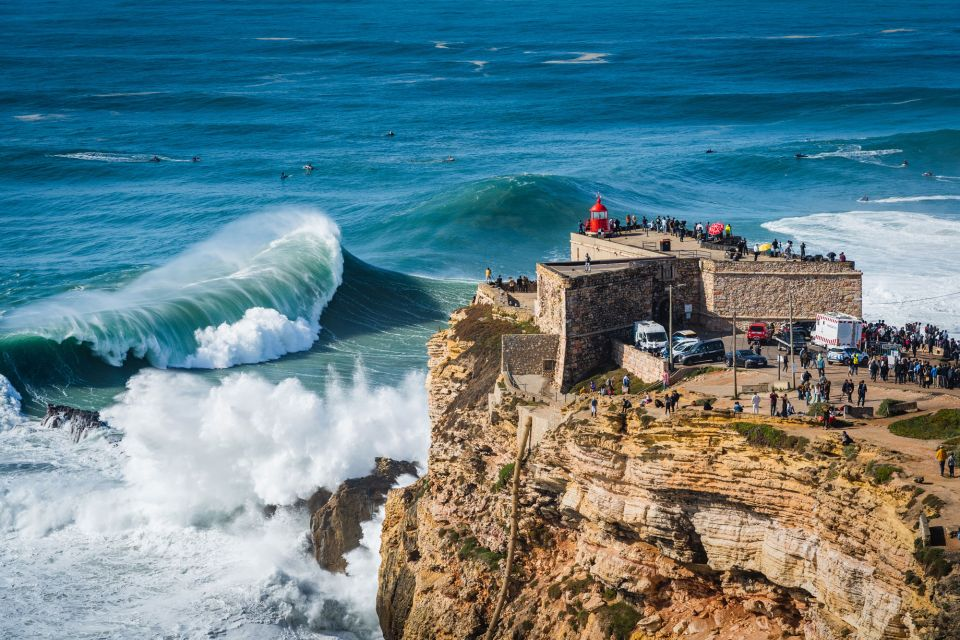

Turismo em Nazaré
| Nazaré é uma vila portuguesa do distrito de Leiria
sede do município a que dá nome e com cerca de 10 300 habitantes.
Situa-se na histórica província da Estremadura e integra a Comunidade
Intermunicipal do Oeste na região do Centro. O Município da Nazaré tem 82,43 km² de área e 14 885 habitantes (2021), e está subdividido em 3 freguesias. O atual espaço urbano da vila aglutina três antigos povoados — Pederneira, Sítio da Nazaré e Praia da Nazaré — e novos bairros da segunda metade do século XX, como a Urbisol ou o Rio Novo, surgidos em consequência da expansão natural dos três núcleos primitivos. |
 |